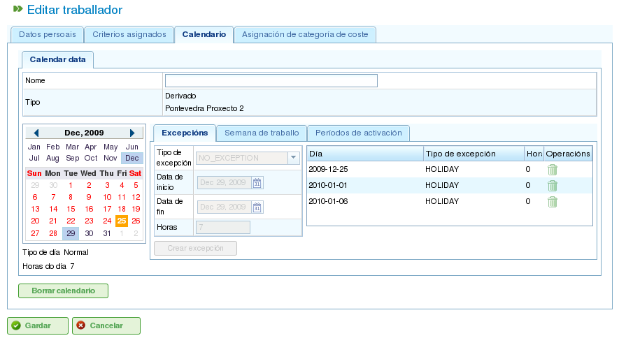

Zarządzanie Zasobami
Contents
Program zarządza dwoma odrębnymi typami zasobów: personelem i maszynami.
Zasoby Personalne
Zasoby personalne reprezentują pracowników firmy. Ich kluczowe cechy to:
- Spełniają jedno lub więcej kryteriów ogólnych lub specyficznych dla pracowników.
- Mogą być konkretnie przypisane do zadania.
- Mogą być generycznie przypisane do zadania, które wymaga kryterium zasobu.
- Mogą mieć domyślny lub specyficzny kalendarz, zależnie od potrzeb.
Zasoby Maszynowe
Zasoby maszynowe reprezentują maszyny firmy. Ich kluczowe cechy to:
- Spełniają jedno lub więcej kryteriów ogólnych lub specyficznych dla maszyn.
- Mogą być konkretnie przypisane do zadania.
- Mogą być generycznie przypisane do zadania, które wymaga kryterium maszynowego.
- Mogą mieć domyślny lub specyficzny kalendarz, zależnie od potrzeb.
- Program zawiera ekran konfiguracji, na którym można zdefiniować wartość alfa reprezentującą stosunek maszyny do pracownika.
- Wartość alfa wskazuje ilość czasu pracownika wymaganego do obsługi maszyny. Na przykład wartość alfa równa 0,5 oznacza, że każde 8 godzin pracy maszyny wymaga 4 godzin czasu pracownika.
- Użytkownicy mogą przypisać wartość alfa konkretnie do pracownika, wyznaczając tego pracownika do obsługi maszyny przez dany procent czasu.
- Użytkownicy mogą również dokonać generycznego przypisania na podstawie kryterium, tak aby procent użycia był przypisany do wszystkich zasobów spełniających to kryterium i posiadających dostępny czas. Przypisanie generyczne działa podobnie do przypisania generycznego dla zadań, jak opisano wcześniej.
Zarządzanie Zasobami
Użytkownicy mogą tworzyć, edytować i dezaktywować (ale nie trwale usuwać) pracowników i maszyny w firmie, przechodząc do sekcji "Zasoby". Ta sekcja zapewnia następujące funkcje:
- Lista pracowników: Wyświetla numerowaną listę pracowników, umożliwiając użytkownikom zarządzanie ich danymi.
- Lista maszyn: Wyświetla numerowaną listę maszyn, umożliwiając użytkownikom zarządzanie ich danymi.
Zarządzanie Pracownikami
Zarządzanie pracownikami jest dostępne przez przejście do sekcji "Zasoby", a następnie wybranie "Lista pracowników". Użytkownicy mogą edytować dowolnego pracownika na liście, klikając standardową ikonę edycji.
Podczas edytowania pracownika użytkownicy mogą uzyskać dostęp do następujących zakładek:
Dane pracownika: Ta zakładka umożliwia użytkownikom edytowanie podstawowych danych identyfikacyjnych pracownika:
- Imię
- Nazwisko(-a)
- Krajowy dokument tożsamości (DNI)
- Zasób oparty na kolejce (patrz sekcja dotycząca zasobów opartych na kolejce)

Edytowanie danych osobowych pracowników
Kryteria: Ta zakładka służy do konfigurowania kryteriów spełnianych przez pracownika. Użytkownicy mogą przypisywać dowolne kryteria pracownicze lub ogólne, które uznają za stosowne. Kluczowe jest, aby pracownicy spełniali kryteria, aby zmaksymalizować funkcjonalność programu. Aby przypisać kryteria:
- Kliknij przycisk "Dodaj kryteria".
- Wyszukaj kryterium do dodania i wybierz najbardziej odpowiednie.
- Kliknij przycisk "Dodaj".
- Wybierz datę początkową, od której kryterium staje się obowiązujące.
- Wybierz datę końcową stosowania kryterium do zasobu. Ta data jest opcjonalna, jeśli kryterium jest uważane za bezterminowe.

Kojarzenie kryteriów z pracownikami
Kalendarz: Ta zakładka umożliwia użytkownikom konfigurowanie konkretnego kalendarza dla pracownika. Wszyscy pracownicy mają przypisany domyślny kalendarz; możliwe jest jednak przypisanie konkretnego kalendarza do każdego pracownika na podstawie istniejącego kalendarza.

Zakładka kalendarza dla zasobu
Kategoria kosztów: Ta zakładka umożliwia użytkownikom konfigurowanie kategorii kosztów spełnianej przez pracownika w danym okresie. Informacje te służą do obliczania kosztów związanych z pracownikiem w projekcie.

Zakładka kategorii kosztów dla zasobu
Przypisanie zasobów jest wyjaśnione w sekcji "Przypisanie zasobów".
Zarządzanie Maszynami
Maszyny są traktowane jako zasoby do wszystkich celów. Dlatego, podobnie jak pracownicy, maszyny mogą być zarządzane i przypisywane do zadań. Przypisanie zasobów jest omówione w sekcji "Przypisanie zasobów", która wyjaśni specyficzne cechy maszyn.
Maszyny są zarządzane z poziomu wpisu menu "Zasoby". Ta sekcja ma operację o nazwie "Lista maszyn", która wyświetla maszyny firmy. Użytkownicy mogą edytować lub usuwać maszynę z tej listy.
Podczas edytowania maszyn system wyświetla serię zakładek do zarządzania różnymi szczegółami:
Dane maszyny: Ta zakładka umożliwia użytkownikom edytowanie danych identyfikacyjnych maszyny:
- Nazwa
- Kod maszyny
- Opis maszyny

Edytowanie danych maszyny
Kryteria: Podobnie jak w przypadku zasobów pracowniczych, ta zakładka służy do dodawania kryteriów spełnianych przez maszynę. Maszynom można przypisać dwa typy kryteriów: specyficzne dla maszyn lub ogólne. Kryteria pracownicze nie mogą być przypisywane maszynom. Aby przypisać kryteria:
- Kliknij przycisk "Dodaj kryteria".
- Wyszukaj kryterium do dodania i wybierz najbardziej odpowiednie.
- Wybierz datę początkową, od której kryterium staje się obowiązujące.
- Wybierz datę końcową stosowania kryterium do zasobu. Ta data jest opcjonalna, jeśli kryterium jest uważane za bezterminowe.
- Kliknij przycisk "Zapisz i kontynuuj".

Przypisywanie kryteriów do maszyn
Kalendarz: Ta zakładka umożliwia użytkownikom konfigurowanie konkretnego kalendarza dla maszyny. Wszystkie maszyny mają przypisany domyślny kalendarz; możliwe jest jednak przypisanie konkretnego kalendarza do każdej maszyny na podstawie istniejącego kalendarza.

Przypisywanie kalendarzy do maszyn
Konfiguracja maszyny: Ta zakładka umożliwia użytkownikom konfigurowanie stosunku maszyn do zasobów pracowniczych. Maszyna ma wartość alfa wskazującą stosunek maszyny do pracownika. Jak wspomniano wcześniej, wartość alfa równa 0,5 wskazuje, że 0,5 osoby jest wymagane na każdy pełny dzień pracy maszyny. Na podstawie wartości alfa system automatycznie przypisuje pracowników powiązanych z maszyną po przypisaniu maszyny do zadania. Kojarzenie pracownika z maszyną można wykonać na dwa sposoby:
- Przypisanie konkretne: Przypisz zakres dat, w których pracownik jest przypisany do maszyny. Jest to przypisanie konkretne, ponieważ system automatycznie przypisuje godziny do pracownika, gdy maszyna jest zaplanowana.
- Przypisanie generyczne: Przypisz kryteria, które muszą być spełnione przez pracowników przypisanych do maszyny. Tworzy to generyczne przypisanie pracowników spełniających kryteria.

Konfiguracja maszyn
Kategoria kosztów: Ta zakładka umożliwia użytkownikom konfigurowanie kategorii kosztów spełnianej przez maszynę w danym okresie. Informacje te służą do obliczania kosztów związanych z maszyną w projekcie.

Przypisywanie kategorii kosztów do maszyn
Wirtualne Grupy Pracowników
Program pozwala użytkownikom tworzyć wirtualne grupy pracowników, które nie są prawdziwymi pracownikami, lecz symulowanym personelem. Te grupy umożliwiają użytkownikom modelowanie zwiększonej zdolności produkcyjnej w określonych momentach, na podstawie ustawień kalendarza.
Wirtualne grupy pracowników umożliwiają użytkownikom ocenę, jak planowanie projektu byłoby zmienione przez zatrudnienie i przypisanie personelu spełniającego określone kryteria, pomagając tym samym w procesie podejmowania decyzji.
Zakładki do tworzenia wirtualnych grup pracowników są takie same jak te do konfigurowania pracowników:
- Dane ogólne
- Przypisane kryteria
- Kalendarze
- Powiązane godziny
Różnica między wirtualnymi grupami pracowników a rzeczywistymi pracownikami polega na tym, że wirtualne grupy pracowników mają nazwę grupy i ilość, reprezentującą liczbę rzeczywistych osób w grupie. Istnieje również pole komentarzy, w którym można podać dodatkowe informacje, takie jak projekt, który wymagałby zatrudnienia odpowiadającego wirtualnej grupie pracowników.

Zasoby wirtualne
Zasoby Oparte na Kolejce
Zasoby oparte na kolejce to specyficzny typ elementów produkcyjnych, które mogą być albo nieprzypisane, albo mieć 100% zaangażowanie. Innymi słowy, nie mogą mieć zaplanowanego więcej niż jednego zadania w tym samym czasie i nie mogą być przeciążone.
Dla każdego zasobu opartego na kolejce automatycznie tworzona jest kolejka. Zadaniami zaplanowanymi dla tych zasobów można zarządzać konkretnie przy użyciu dostarczonych metod przypisania, tworząc automatyczne przypisania między zadaniami a kolejkami spełniającymi wymagane kryteria lub przenosząc zadania między kolejkami.